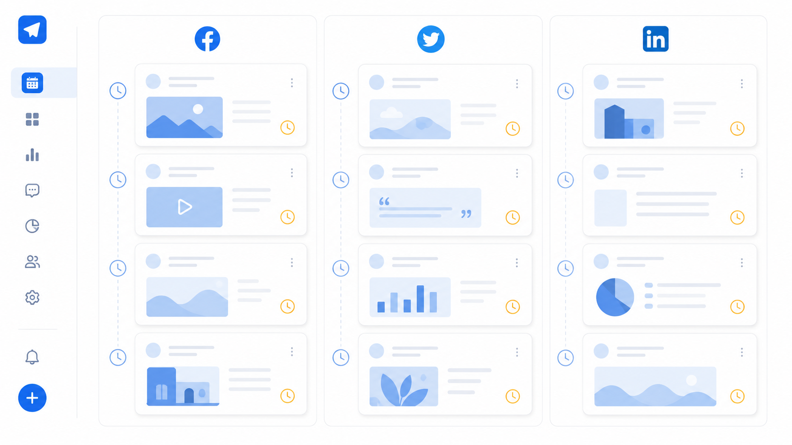

Buffer es la herramienta de gestión de redes sociales más conocida después de Hootsuite. Nació en 2010 con una propuesta simple: programar posts de forma fácil y sin complicaciones. En 2026 sigue siendo fiel a esa filosofía, lo cual es su mayor virtud y también su mayor limitación.
Si buscas algo que funcione desde el primer día sin curva de aprendizaje, Buffer es difícil de batir. Si buscas analíticas profundas, informes automáticos para clientes o gestión de muchas marcas, vas a necesitar otra herramienta.
Qué es Buffer
Buffer es una plataforma de programación de redes sociales fundada en 2010 en San Francisco. Su modelo de negocio ha pivotado varias veces: pasó de ser una herramienta todo-en-uno a separar sus funciones en productos distintos (Buffer Publish, Buffer Analyze, Buffer Reply), y luego volvió a unificarlo todo. En 2026 es un producto único con plan gratuito y planes de pago por canal.
Compatible con Instagram, Facebook, X (Twitter), LinkedIn, TikTok, Pinterest, YouTube y Mastodon. La extensión de Chrome es uno de sus puntos más valorados: permite programar contenido desde cualquier página web con un solo clic.
Funciones principales
Programación de publicaciones
El núcleo de Buffer. Puedes programar posts, Reels, Stories, carruseles y vídeos con una interfaz que cualquier persona entiende en 10 minutos. El calendario muestra todas las publicaciones pendientes por canal. La función "Queue" permite crear una cola de publicación con horarios fijos predefinidos: añades contenido y se va publicando automáticamente en los horarios que hayas configurado.
Analíticas
En el plan gratuito, las analíticas son muy básicas: likes, comentarios y alcance post a post. En planes de pago mejoran, pero siguen siendo inferiores a lo que ofrece Metricool en su plan gratuito. No hay comparativa con competidores, no hay análisis de la audiencia demográfica y el historial de datos es limitado.
Extensión de Chrome
Una de las funciones más útiles de Buffer. Instalas la extensión y desde cualquier web (un artículo que quieres compartir, una imagen de Pinterest, un vídeo de YouTube) puedes programarlo directamente en tus redes con un clic. Muy cómodo para curación de contenido.
Ideas (Start Page)
Buffer incluye una función de "Start Page": una mini web de enlace en bio personalizable. Similar al Linkin.bio de Later. Gratis con cualquier plan. Útil si no quieres pagar por Linktree u otras herramientas de este tipo.
IA para creación de contenido
Buffer ha integrado un asistente de IA para generar ideas de posts y textos. En 2026 está disponible desde el plan gratuito. Genera propuestas de copy a partir de un tema o URL. Útil para desbloquearse cuando no sabes qué escribir, aunque los textos siempre necesitan edición manual.
Precios reales en 2026
| Plan | Precio | Canales incluidos | Posts programados |
|---|---|---|---|
| Free | 0€ | 3 canales | 10 por canal |
| Essentials | ~5$/canal/mes | Ilimitados | Ilimitados |
| Team | ~10$/canal/mes | Ilimitados | Ilimitados + colaboración |
Ejemplo real: un autónomo con 5 clientes, cada uno con Instagram + Facebook + LinkedIn = 15 canales × 5$/mes = 75$/mes (≈70€/mes). Con Metricool, esos mismos 5 clientes en el plan Starter 10 marcas cuestan 37€/mes. La diferencia en cuanto tienes varios clientes es significativa.
Para un solo canal o una sola marca, Buffer es muy competitivo. Para agencias, el modelo de precios es su talón de Aquiles.
Lo que hace muy bien
- Facilidad de uso. La interfaz más intuitiva del mercado. Sin tutoriales, sin configuración compleja. Creas cuenta y en 10 minutos estás programando tu primer post.
- Extensión de Chrome. Imprescindible para quien hace curación de contenido. Ninguna otra herramienta tiene algo tan bien integrado en el flujo de navegación diario.
- Plan gratuito sin caducidad. 3 canales y 10 posts por canal gratis para siempre. Suficiente para alguien que empieza con sus propias redes.
- Start Page incluida. Mini web de enlace en bio gratis. Ahorra la suscripción a Linktree u otras herramientas similares.
- IA para copy. El asistente de IA es más útil que el de la mayoría de competidores. Genera ideas coherentes y con contexto.
- App móvil. Una de las mejores apps móviles del sector. Fluida, bien diseñada y con casi todas las funciones de escritorio.
Lo que hace mal
- Precio por canal. El modelo de precios penaliza a quien gestiona varios clientes con varias redes. Se encarece muy rápido.
- Sin informes para clientes. Buffer no genera informes en PDF ni PPT. Si tienes clientes, tendrás que hacerlos manualmente o con otra herramienta.
- Analíticas pobres. Las analíticas de los planes de pago son básicas comparadas con Metricool. Sin análisis de competidores, sin demografía detallada, sin historial largo.
- Sin análisis de competidores. Ni en los planes más caros. Si quieres monitorizar a la competencia, necesitas otra herramienta.
- Interfaz principalmente en inglés. La plataforma no está completamente traducida al español. Para quien no se maneja bien en inglés, puede ser una barrera.
- Sin soporte de Google Business Profile. No puedes publicar en fichas de Google desde Buffer. Para negocios locales, esto es una carencia importante.
¿Para quién es Buffer?
| Perfil | ¿Recomendado? | Plan sugerido |
|---|---|---|
| Creador individual con 1-2 redes propias | ✓ Sí | Free o Essentials |
| Pequeño negocio sin necesidad de informes | ✓ Sí | Essentials (2-3 canales) |
| Autónomo con 2-3 clientes | Depende | Essentials, pero atento al precio |
| Agencia con 5+ clientes | ✗ No | Mejor Metricool |
| Quien necesita informes PDF para clientes | ✗ No | Mejor Metricool |
| Quien hace mucha curación de contenido | ✓ Sí | Por la extensión de Chrome |
Alternativas a considerar
- Metricool — más completo, con informes y analíticas reales. Mejor para quién gestiona clientes. Ver comparativa Metricool vs Buffer →
- Later — mejor para contenido visual (Instagram, TikTok). Interfaz de calendario muy visual.
- Publer — más funciones por precio similar. Reciclaje de contenido y IA incluidos.
Conclusión
Buffer sigue siendo la mejor herramienta para quien empieza y quiere algo que funcione desde el primer minuto sin complicaciones. El plan gratuito es generoso para cuentas propias y la extensión de Chrome es genuinamente útil.
El problema aparece cuando creces: el modelo de precios por canal se encarece muy rápido y la falta de informes para clientes la hace inviable para trabajo profesional de agencia. Para ese perfil, Metricool es la alternativa más lógica.
Recomendación final
Buffer es la herramienta perfecta si gestionas tus propias redes y quieres empezar sin aprender nada. Si tienes o planeas tener clientes, empieza directamente con Metricool: el salto de precio es menor de lo que parece y evitas cambiar de herramienta en 6 meses.